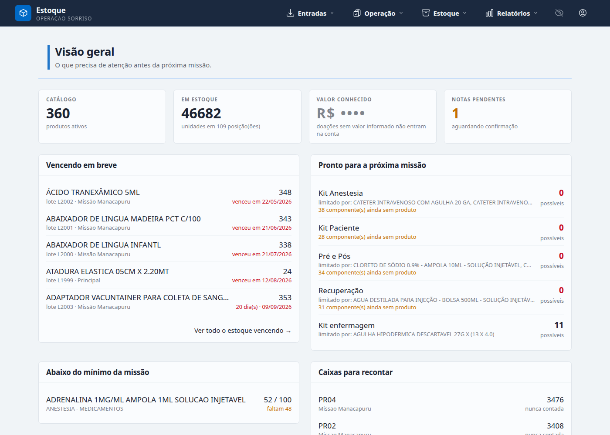
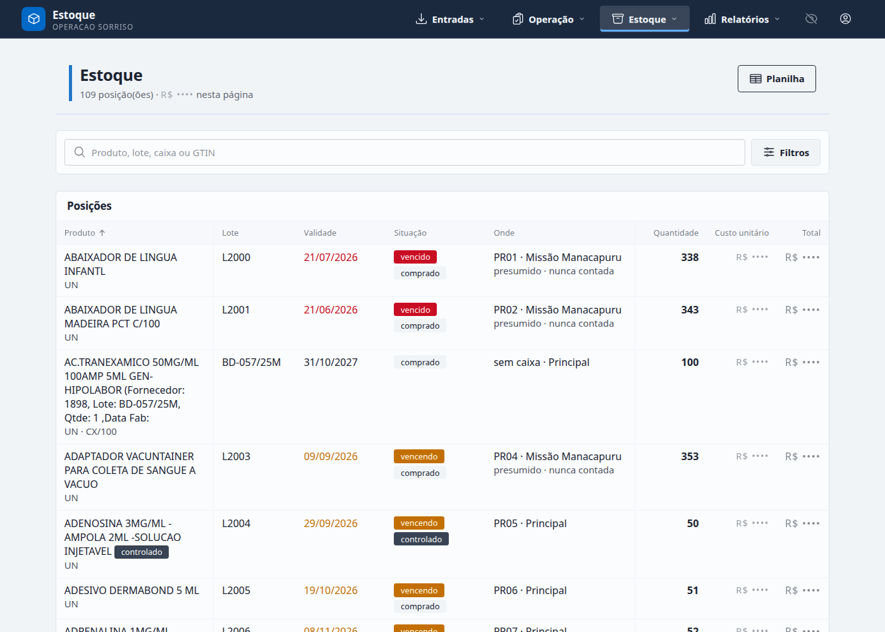
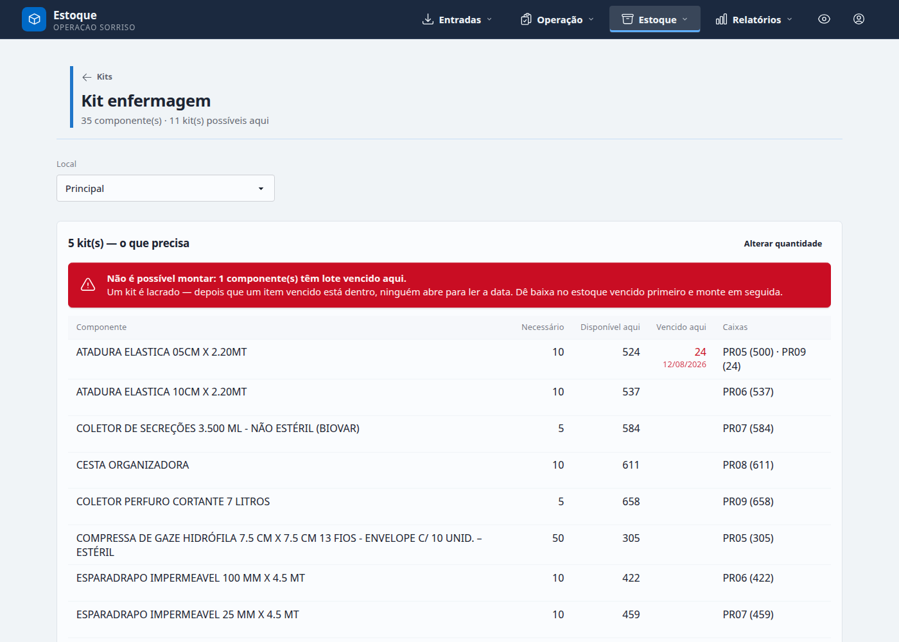

Cinquenta testes para rodar no ambiente publicado, na ordem em que
estão. Cada um tem passo a passo e critério de aceite — um teste só passa se
o critério for observado na tela, não se “pareceu funcionar”. As fases se
apoiam umas nas outras: a Fase 2 cria as contas que a Fase 3 usa, e a Fase 4
lança o estoque que a Fase 7 consome.
Antes de começar: três coisas que só aparecem em produção
O papel timbrado do termo de doação vem de variável de ambiente.
Sem ORGANIZATION_DOCUMENT, ORGANIZATION_ADDRESS e
ORGANIZATION_CONTACT configuradas, o termo imprime o CNPJ
00.000.000/0000-00 — que é o placeholder do repositório, porque
ele é público. Configure antes do teste T-39 ou ele falha por um motivo
que não é um defeito.
Esta instalação não envia e-mail, de propósito. Magic link,
“esqueci minha senha” e confirmação de troca de e-mail respondem com uma
explicação, não com um formulário. Isso é comportamento esperado e tem
teste próprio (T-06). A senha de uma conta se troca por dentro, logado, ou
o admin cria outra.
O app dorme, e o banco tem prazo. No plano gratuito o serviço
hiberna depois de 15 minutos sem acesso e leva cerca de um minuto para
acordar — abra a URL dez minutos antes de mostrar a alguém. E o banco
gratuito é apagado 30 dias depois de criado, com 14 dias de
carência para migrar de plano. Anote a data (T-49).
FASE 0
O deploy subiu de verdade
Nada abaixo faz sentido se um destes falhar.
T-01
A aplicação responde e serve os assets
Um release sem assets digeridos serve a página crua, e o sintoma é uma tela branca com um logo gigante.
Abra a URL pública em /users/log-in.
No navegador, abra as ferramentas de desenvolvedor na aba Network e recarregue.
Aceite
A tela de login aparece com a marca, tipografia e cores — não texto puro.
app.css e app.js retornam 200, com nome digerido (app-<hash>.css).
Nenhum erro no console.
T-02
As sete migrations rodaram
rel/entrypoint.sh migra antes de subir o servidor, com set -e, justamente para o app não atender servindo o schema antigo.
No painel do Render, aba Logs do serviço, procure as linhas de migração do último deploy.
Ou conecte no banco com a string de conexão externa: psql "<external connection string>" e depois select count(*) from schema_migrations;
Aceite
schema_migrations tem 7 linhas.
Nenhum ** (Postgrex.Error) no log do boot.
T-03
O papel timbrado está configurado
É a única configuração cuja falta só aparece num PDF entregue a um hospital.
No painel do Render, aba Environment do serviço, confira as quatro variáveis ORGANIZATION_*.
Se faltarem, preencha ali e salve — o serviço reinicia sozinho.
Aceite
ORGANIZATION_DOCUMENT não é 00.000.000/0000-00.
T-04
Catálogo e cenário carregados no primeiro boot
O plano gratuito não dá shell, então a carga acontece no primeiro boot — e só uma vez. Se ela não aconteceu, a demo sobe correta e vazia, que para demonstrar é o mesmo que quebrada.
Abra os Logs do primeiro deploy e procure o bloco === what was created ===.
Se não houver, confirme que SEED_ON_EMPTY está true em Environment e force um Manual Deploy.
Confira no app: /stock deve listar posições, e /missions três missões.
Aceite
O log traz o resumo: 10 caixas, 95 produtos de suprimento, 2 notas, 2 missões fechadas, 1 em andamento, e a conta para entrar.
Depois dele, a linha [seed] fresh database — catalog and demo scenario loaded.
Num deploy seguinte o log diz [seed] database already has accounts — nothing to do, e nada é duplicado.
T-05
HTTPS obrigatório, cookie seguro
Acesse a URL com http:// explícito.
Logado, inspecione o cookie de sessão.
Aceite
Redireciona para https://.
Resposta traz strict-transport-security.
Cookie de sessão marcado Secure e HttpOnly.
T-06
Os fluxos de e-mail estão desligados e explicam por quê
Comportamento esperado, não defeito: a instalação não tem mailer e nada de entrar depende de mensagem chegar.
Na tela de login, procure o formulário de magic link e o link “esqueceu sua senha”.
Acesse /users/reset-password direto na barra de endereço.
Aceite
Só existe um formulário: e-mail e senha.
Nenhum link para /users/reset-password.
Aparece a frase “Fale com um administrador para redefini-la — esta instalação não envia e-mail.”
Acessar /users/reset-password volta ao login com aviso, sem formulário morto.
FASE 1
Entrar e sair
A única conta que existe é a do admin.
T-07
O admin entra com a senha do seed
Entre com admin@exemplo.org e a senha impressa no log do primeiro deploy (demonstracao2026).
Aceite
Cai direto na Visão geral, sem pedir troca de senha.
Os quatro números do topo estão preenchidos, não zerados.

Referência: a Visão geral logo após o seed. Os números variam conforme a data.
T-08
Troque a senha do admin — e troque de verdade
A senha do seed está escrita neste documento. Ela não pode continuar valendo depois da primeira entrada.
Vá em /users/settings.
Preencha nova senha e confirmação (mínimo 12 caracteres) e salve.
Saia e entre de novo com a nova senha.
Aceite
A tela mostra o formulário de senha. Não mostra formulário de e-mail (não há mailer).
Entra com a senha nova; a antiga é recusada.
T-09
Tentativa e erro em série é barrada
Erre a senha do admin@exemplo.org várias vezes seguidas.
Aceite
Em algum ponto a resposta vira “Muitas tentativas. Tente novamente em … ”, em vez de continuar aceitando tentativas.
T-10
Continuar conectado, e sair
Entre com “Entrar e continuar conectado”. Feche o navegador e reabra a URL.
Saia pelo menu da conta.
Aceite
Reabrir o navegador mantém a sessão.
Depois de sair, uma página interna redireciona ao login.
FASE 2
Criar as contas das outras pessoas
O caminho real: alguém responde pela conta e entrega uma senha temporária.
T-11
O admin cria três contas, uma por papel
Vá em /admin/users.
Crie uma conta manager, uma logistics e uma auditor, com e-mails reais de quem vai testar.
Anote a senha temporária de cada uma na hora em que aparecer.
Aceite
A senha temporária é exibida uma vez, ao criar.
As três contas aparecem na lista com o papel correto.
Tentar criar com um e-mail já usado é recusado com mensagem clara, não com erro 500.
T-12
A conta nova é obrigada a escolher a própria senha
Senha temporária é conhecida por duas pessoas, e uma assinatura no razão não pode valer isso.
Numa janela anônima, entre com a conta logistics e a senha temporária.
Antes de trocar, tente ir para /stock e para / pela barra de endereço.
Escolha uma senha nova e continue.
Aceite
Cai em /users/reset-password/required.
Qualquer outra rota devolve para essa mesma tela — nenhuma escapa.
Depois de trocar, navega normalmente e não pede mais.
T-13
Alguém de outro local entra pela internet
Envie a URL e as credenciais a uma pessoa em outra cidade ou em rede móvel.
Peça que entre e abra /stock e /missions.
Aceite
Entra sem VPN nem lista de IPs.
As telas ao vivo atualizam (o LiveView conectou; não há aviso “Sem conexão com a internet”).
Pergunte se pareceu lento — é uma instância só, e se estava hibernando o primeiro acesso leva cerca de um minuto.
FASE 3
Papéis e dinheiro
A regra mais fácil de quebrar sem ninguém notar.
T-14
Logistics não vê preço em lugar nenhum
Logado como logistics, percorra: /, /stock, /products/<id>, /invoices, /issues.
Em cada tela, procure R$, custo unitário e valor total.
Aceite
Nenhum valor monetário em nenhuma das telas, nem escondido atrás do olho de “revelar”.
O cartão “Valor conhecido” da Visão geral não aparece.
/reports/audit e o termo de doação são recusados.
T-15
Auditor lê tudo, inclusive dinheiro, e não escreve nada
Logado como auditor, abra /stock, /invoices, /reports/audit.
Tente qualquer escrita: editar mínimo de um produto, montar kit, dar baixa.
Aceite
Vê valores e o razão completo.
Todo controle de escrita está desabilitado, com o motivo no title.
Nenhuma escrita passa nem quando o botão é forçado — a recusa vem do servidor.
T-16
Valores começam escondidos
O padrão que revela já mostrou o número a quem estava ao lado.
Como manager, entre e olhe “Valor conhecido” antes de clicar em nada.
Clique no ícone de revelar. Abra uma nova janela do navegador e entre de novo.
Aceite
Ao entrar, os valores estão cobertos.
Revelar vale enquanto se trabalha, e um navegador novo começa coberto outra vez.
T-17
“Ver como” é só leitura
Como admin, use “ver como” logistics.
Confira que preços desapareceram. Tente uma escrita.
Aceite
A tela passa a esconder dinheiro, como para o operador.
Escrita é recusada nesse estado — nada é gravado no nome de outra pessoa.
Sair do “ver como” devolve a visão de admin.
FASE 4
Catálogo e histórico
322 linhas da tabela padrão, com a sujeira original preservada.
T-18
O catálogo veio inteiro, com a bagunça de origem
A planilha real tem descrições repetidas, NCM faltando e um setor digitado de dois jeitos. Normalizar isso escondendo seria mentir sobre o dado.
Em /stock, busque por ATADURA e por CRASHB.
Abra um produto e confira NCM, unidade de estoque, setor e classificação.
Aceite
A busca acha por parte do nome.
Existem produtos com NCM vazio, e isso não quebra a tela.
O setor aparece como está na planilha, incluindo a grafia errada.
T-19
Mudar o mínimo registra quem mudou
“Quem baixou o mínimo da gaze, e quando” é a pergunta feita depois que uma missão passa aperto.
Como manager, abra um produto e altere o mínimo.
Recarregue e procure o registro da mudança na própria tela do produto.
Aceite
Aparece o valor antigo, o novo, quem alterou e quando.
O mínimo não gera movimento no razão — é planejamento, não mercadoria.
T-20
Histórico de um produto conta a vida dele
Abra um produto que foi para a missão de Tefé ou Carauari.
Leia o histórico de ponta a ponta.
Aceite
Entrada inicial, derrubada, consumo, doação e retorno aparecem em ordem de data.
Cada linha diz o tipo do movimento e quem o fez.
O saldo mostrado bate com a soma das linhas.
FASE 5
NF-e: importar, resolver, lançar
O cenário deixa a NF 1985167 esperando exatamente para isto.
T-21
Uma nota lançada e uma pendente, como veio do seed
Abra /invoices.
Aceite
NF 977098 está lançada, com data de lançamento.
NF 1985167 está pendente e o cartão “Notas pendentes” da Visão geral mostra 1.
T-22
A carta de correção está anexada à nota que ela corrige
Abra a NF 977098.
Aceite
Há um evento do tipo CC-e anexado, com o texto da correção (troca de transportadora e tipo de frete).
T-23
Reimportar o mesmo XML não duplica estoque
A chave de acesso é a chave de idempotência. Reenviar um XML é acidente comum.
Baixe do repositório um dos XMLs de priv/samples/.
Em /invoices/import, envie o XML da NF 977098, que já está lançada.
Aceite
Responde que já foi importada e leva à nota existente.
Nenhuma linha nova no razão; o saldo do estoque não muda.
T-24
Resolver as linhas da nota pendente
Esta é a nota cujo lote só existe no texto livre do infAdProd — o caso difícil do parser.
Abra a NF 1985167 e veja as 4 linhas.
Para cada linha: aponte o produto do catálogo (ou crie) e informe quantas unidades de estoque a embalagem comercial contém.
Aceite
Cada linha já chega com lote e validade extraídos do texto livre — ex. Lote:114391U02, Validade:31/03/27.
Ao informar o fator, o custo unitário é calculado sozinho, não digitado.
Linhas resolvidas param de aparecer como pendentes de revisão.
A conversão informada é lembrada: a próxima nota do mesmo fornecedor já vem com ela.
T-25
Lançar a nota entra o estoque com custo real
Com as 4 linhas resolvidas, lance a nota no estoque Principal.
Confira /stock e o histórico de um dos produtos da nota.
Aceite
Um lote por linha, com o número de lote da nota.
Saldo somado em unidades de estoque, não em unidades comerciais.
Custo unitário preenchido, nunca 0,01.
A nota vira lançada e o cartão “Notas pendentes” cai para 0.
Lançar de novo é recusado.
FASE 6
Recebimento e conferência
Contar o que chegou contra o que a nota prometeu.
T-26
Conferência às cegas esconde o esperado
Uma conferência que mostra o número esperado é uma conferência que confirma o número esperado.
Em /conferences, abra uma conferência para uma nota, no modo às cegas.
Digite as quantidades contadas.
Aceite
A quantidade esperada não aparece em nenhum lugar da tela enquanto se conta.
As linhas ficam na ordem do documento (número de item da NF) e não se reordenam quando uma é preenchida.
A linha não muda de altura ao ser confirmada.
T-27
Divergência abre uma segunda rodada
Conte uma linha com quantidade diferente da esperada e finalize.
Abra uma nova rodada para a mesma nota e conte de novo.
Aceite
A divergência é mostrada com os dois números.
A segunda rodada é numerada como tal, e a primeira continua registrada — nada é sobrescrito.
T-28
Concluir a conferência move o estoque
Conclua a conferência e abra o recebimento em /receipts/<id>.
Aceite
O que entrou no estoque é o contado, não o esperado.
O recebimento fica com quem contou e quando.
FASE 7
Caixas, contagem e o que é presumido
A afirmação central da tela de estoque.
T-29
Saldo contado e saldo presumido são distinguíveis
Se toda linha tem a mesma marca, a marca não informa nada. O cenário foi montado com as duas situações de propósito.
Abra /stock e procure as marcas de “presumido” e de contagem.
Compare as caixas PR05, PR06, PR07 (contadas na última quinzena) com PR08 e PR09 (contadas há 48 e 74 dias).
Aceite
PR05–PR07 aparecem como verificadas, sem marca de aviso.
PR08 e PR09 aparecem como “presumido desde …” — passaram da linha de 30 dias.
PR01–PR04 e PR10 estão na missão e nunca foram contadas.

Referência: a lista de estoque com as posições e as marcas de contagem.
T-30
Contar uma caixa a torna verificada
Como logistics, abra /boxes/<id> de PR08.
Faça a contagem e confirme.
Aceite
A marca de “presumido” sai daquelas posições.
Se a contagem divergir, o ajuste exige código de motivo.
T-31
Mover uma caixa não obriga a recontar
Uma caixa viaja inteira. Exigir recontagem na chegada é o que faz operador nenhum usar o sistema.
Mova PR06 para outro local em /locations ou pela tela da caixa.
Olhe o saldo e a data de última verificação.
Aceite
O conteúdo foi junto, com os mesmos lotes e quantidades.
A data de última verificação não foi zerada nem atualizada — mover não é contar.
T-32
A mini-auditoria diz qual caixa abrir primeiro
Abra /audit como manager.
Siga para /audit/<id> de uma das caixas sugeridas e faça a contagem.
Aceite
A sugestão prioriza caixas há mais tempo sem contagem, e diz por quê.
Contar dali marca a caixa como verificada.
FASE 8
Kits
Um kit é um produto. E é lacrado.
T-33
Um kit resolvido e quatro como a planilha escreveu
As planilhas de kit nomeiam itens em texto livre que o catálogo não tem. Esse é o estado real do dado e a tela existe para resolvê-lo.
Abra /kits.
Aceite
Kit enfermagem tem os 35 componentes resolvidos e mostra um número de kits possíveis.
Os outros quatro mostram “N componente(s) ainda sem produto” e não podem ser montados.
T-34
Item vencido na prateleira impede montar o kit
O FEFO pega o lote mais velho primeiro — ou seja, pegaria justamente o vencido, e o lacraria dentro de algo que ninguém abre para ler a data.
Abra Kit enfermagem e peça a conferência de 5 kits.
Procure a linha de ATADURA ELASTICA 05CM X 2.20MT.
Tente montar.
Aceite
Faixa vermelha: “Não é possível montar: 1 componente(s) têm lote vencido aqui.”
A coluna Vencido aqui mostra a quantidade e a data só na linha do componente vencido.
As outras linhas mantêm a mesma altura — a coluna existe em todas, invisível onde não há o que dizer.
O botão Montar está desabilitado, com o motivo no title.
Não existe caixa de seleção para ignorar o vencido.

Referência exata: é assim que a recusa deve aparecer.
T-35
Dar baixa no vencido libera a montagem
A saída é um movimento com código de motivo, que fica registrado — não um clique que se ignora.
Dê baixa nas 24 unidades do lote vencido de ATADURA ELASTICA 05CM X 2.20MT por ajuste, motivo vencimento.
Volte ao kit e peça a conferência de novo.
Aceite
A faixa vermelha desaparece e o botão Montar volta a funcionar.
A baixa aparece no histórico do produto, com motivo e responsável.
T-36
Montar converte componentes em um lote do kit
Monte 5 kits numa caixa.
Olhe /stock: o kit e dois dos componentes.
Aceite
Existe um lote novo do produto “Kit enfermagem”, na caixa escolhida.
Os componentes saíram do estoque — montar é fabricar, não empacotar.
A validade do lote do kit é a mais próxima entre os componentes usados.
Pedir mais kits do que dá para montar é recusado, a menos que se marque “montar o que chegou”.
T-37
Um kit montado se dá baixa como qualquer produto
Em /issue, dê baixa de 1 kit para centro cirúrgico.
Aceite
A tela que baixa uma gaze baixa um kit, sem passo especial. O saldo do kit cai em 1.
T-38
Só gestor mexe na receita do kit
Montar é do dia a dia da logística. Mudar do que o kit é feito é decisão de planejamento.
Como logistics, abra o Kit enfermagem e tente adicionar, alterar e remover um componente.
Como manager, faça as mesmas três coisas.
Aceite
Para logistics os três controles estão desabilitados, e a recusa também vem do servidor se forçada.
Para manager as três funcionam.
O número de kits possíveis se recalcula depois da mudança.
FASE 9
Missões: sair, consumir, doar, voltar
O ciclo em torno do qual a operação é organizada.
T-39
A missão em andamento mostra o que está no local
Abra /missions e depois a missão Manacapuru.
Aceite
Aparece como em andamento, com datas e número de mesas.
Lista o que foi enviado, o que já foi consumido e o que continua no local.
As duas missões fechadas (Tefé, Carauari) não têm saldo no local — tudo voltou ou foi doado.
T-40
Duas missões no mesmo lugar ao mesmo tempo é recusado
A regra é por lugar, não global — e é garantida pelo banco, porque a corrida entre duas pessoas criando ao mesmo tempo é invisível para validação de aplicação.
Crie uma missão nova em um local novo. Deve funcionar.
Crie outra no mesmo local, com datas que se sobrepõem à primeira.
Aceite
A primeira é criada.
A sobreposta é recusada com mensagem legível — não erro 500.
Datas que se encostam sem sobrepor, ou o mesmo período em outro local, são aceitas.
T-41
Derrubada leva caixas inteiras
Em /load-out, como logistics, envie duas caixas do estoque Principal para a missão criada em T-40.
Aceite
Todo o conteúdo das caixas mudou de local, lote por lote.
/stock no Principal já não mostra aquelas posições; o local da missão mostra.
A data de última verificação das caixas não mudou.
T-42
Consumo no local, com destino
Em /issue, dê baixa de itens no local da missão com destino centro cirúrgico.
Repita com destino PACU.
Aceite
O destino é um valor escolhido, não texto livre.
O painel da missão soma o consumo.
Tentar baixar mais do que existe é recusado.
T-43
Doação ao hospital gera o termo
É o documento que sai da mão de alguém e vai para a de outra instituição. Depende do T-03.
Dê baixa com destino doação, informando o nome da instituição.
Em /issues, abra a baixa e gere o termo.
Aceite
O termo abre com o nome, CNPJ e contato da organização — os reais, não o placeholder.
Lista os itens, quantidades e valores.
Nomeia a instituição que recebeu.
Como logistics, o termo é recusado — ele declara valor.
T-44
Retorno traz o que sobrou
Em /returns, receba de volta as caixas da missão de T-41.
Aceite
O que sobrou volta ao Principal, com os mesmos lotes.
O local da missão fica sem saldo.
O painel da missão fecha a conta: enviado = consumido + doado + retornado.
FASE 10
Razão, relatórios e limites
O que sustenta tudo acima, e o que o free tier aguenta.
T-45
Ajuste sem motivo é recusado
Ajuste sem motivo é exatamente o que torna um estoque não auditável.
Faça um ajuste de contagem deixando o motivo em branco.
Aceite
Recusado, com mensagem. Não existe caminho para gravar ajuste sem código de motivo.
T-46
Nada é apagado
Procure, em qualquer tela, um botão que exclua movimento, nota, lote ou conta.
Aceite
Não existe. Correção se faz com movimento novo; conta se desativa.
T-47
Exportação para Excel abre, e é aparada por papel
Como manager, baixe /stock/export.xlsx e abra no Excel ou LibreOffice.
Como logistics, baixe o mesmo arquivo.
Aceite
O arquivo abre sem aviso de corrupção.
Para manager traz custo e valor.
Para logistics o arquivo vem sem as colunas de dinheiro — aparado, não recusado.
T-48
O relatório do auditor fecha com o razão
Abra /reports/audit como auditor.
Escolha um produto e confira o saldo contra o histórico dele.
Aceite
O saldo do relatório é igual à soma dos movimentos do histórico.
Cada movimento tem tipo, data e responsável.
T-49
O banco tem espaço — e prazo
O banco gratuito não enche; ele vence. É apagado 30 dias depois de criado, e descobrir isso depois é perder os dados da demo.
No painel do Render, abra o banco e anote a data de criação e a de expiração.
Confira o espaço usado no mesmo painel.
Aceite
A data de expiração está depois da data da apresentação — com margem.
Espaço usado muito abaixo de 1 GB (o cenário inteiro são ~1.400 linhas).
Se a demo precisar durar mais que isso, troque DATABASE_URL por um Postgres cujo plano gratuito não expire, ou passe o banco para plano pago — nada mais muda.
T-50
A aplicação não está reiniciando em loop
512 MB é pouco. Um processo que morre por memória volta sozinho e some do olhar de quem só usa a tela.
Depois de toda a bateria, abra Events, Metrics e Logs do serviço no Render.
Aceite
Sem reinício que você não tenha pedido; memória estável, não subindo a cada tela.
Hibernar por inatividade é esperado e não é reinício por falha.
Sem OOM nem Killed no log.
Sem erro de conexão de banco — o pool é de duas conexões, e é o número certo para este plano.
Resumo para colar
Preenchido a partir dos resultados marcados acima. Os resultados ficam
neste navegador, então marque tudo na mesma máquina — e copie este texto
antes de fechar.